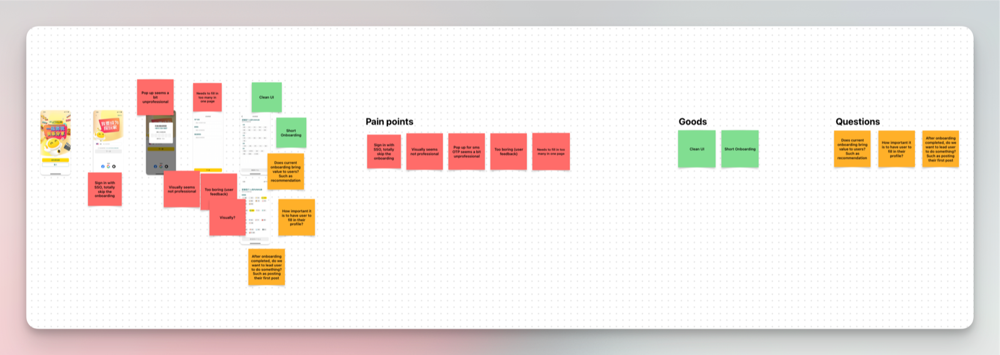
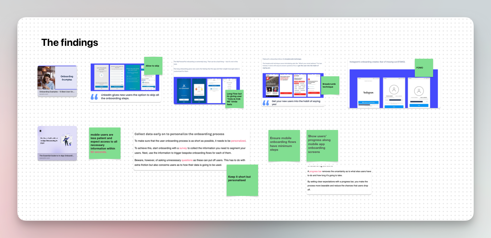
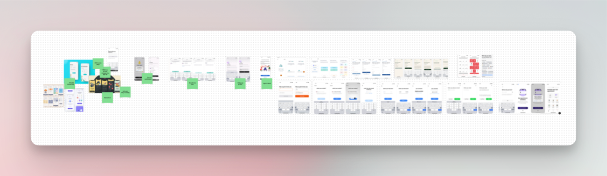
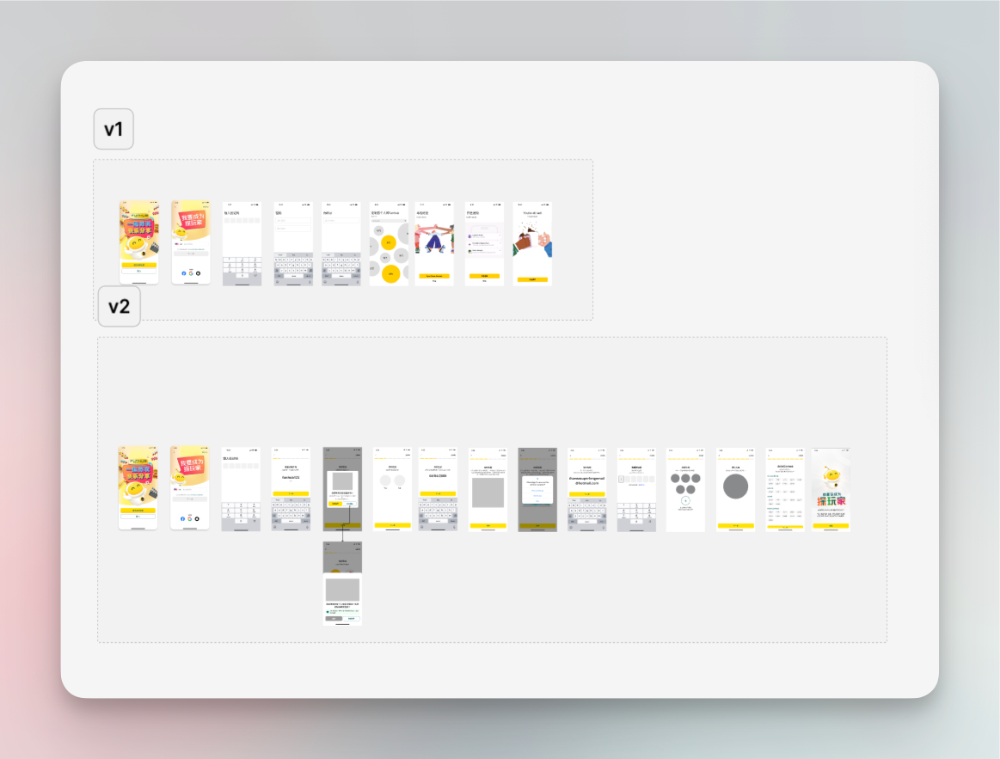
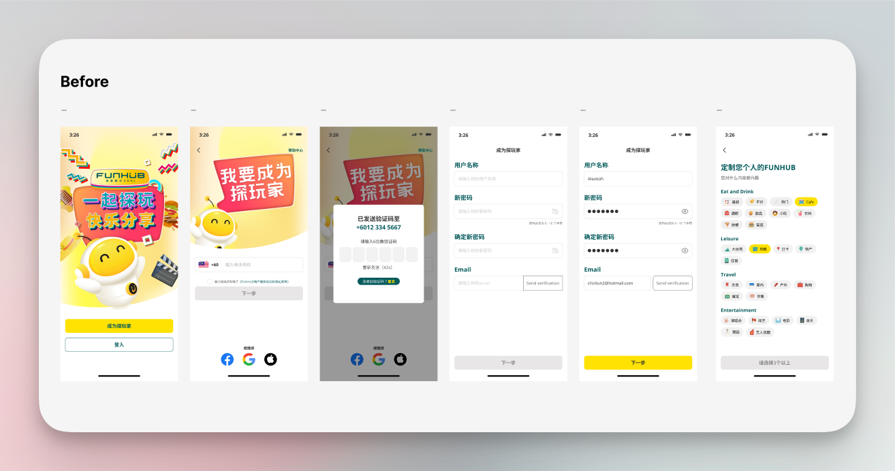
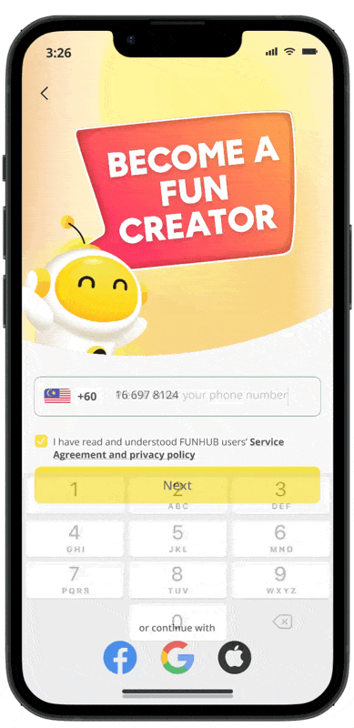
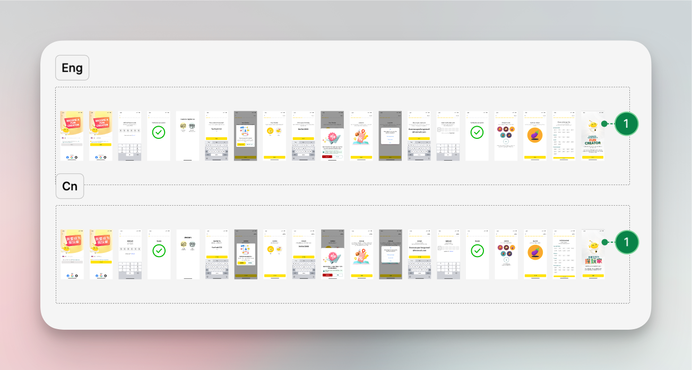
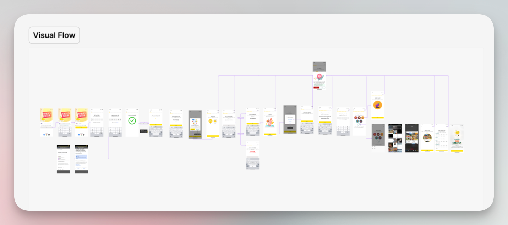

Overview專案概述
Funhub is Malaysia’s first Entertainment & Lifestyle Social Circle App, offering users a variety of vouchers and deals for entertainment, food, travel, and other services.
Funhub 是馬來西亞第一個「娛樂與生活社交圈」App,提供使用者娛樂、美食、旅遊等各類服務的票券與優惠。
The current flow fails to capture sufficient information, limiting the ability to provide a tailored user experience. This project aims to improve the sign-up flow to enhance data collection for personalisation while minimising drop-off, ensuring users can easily engage with the platform and receive relevant, personalised content.
目前的流程未能收集到足夠的資訊,限制了提供客製化使用者體驗的能力。這個專案的目標是優化註冊流程,強化資料收集以實現個人化,同時降低流失率,確保使用者能輕鬆使用平台,並獲得相關且個人化的內容。
Problems問題
Insufficient data for personalised content個人化內容所需的資料不足
The current sign-up process fails to capture enough user information to enable a personalised experience.
目前的註冊流程未能收集足夠的使用者資訊,無法提供個人化體驗。
Goal目標
Enhance data collection for personalised experiences強化資料收集,打造個人化體驗
Ensure that necessary user data is gathered to offer personalised content, while minimising the risk of user drop-off during the sign-up process.
確保收集到必要的使用者資料以提供個人化內容,同時降低註冊過程中使用者流失的風險。
The Process執行過程
Identify Pros and Cons of Current UI找出現有介面的優缺點
The current onboarding flow collects minimal data, making the process quick and straightforward. However, since this app is new and lacks data tracking, the team cannot identify completion rates or understand where users might drop off.
目前的導覽流程收集的資料極少,過程簡短又直覺。不過由於這款 App 剛推出、缺乏數據追蹤機制,團隊無法得知完成率,也無法了解使用者可能在哪個環節流失。

With no tracking data available, I focused on gathering qualitative insights and conducting competitive analysis to assess the current onboarding flow.
在缺乏追蹤數據的情況下,我把重點放在蒐集質化洞察與進行競品分析,以評估現有的導覽流程。
Competitive Analysis競品分析
I examined onboarding flows from similar apps and identified several best practices. These included:
我檢視了同類型 App 的導覽流程,歸納出幾項最佳實務,包括:
- Offering clear value propositions for why user data is being collected.
- Providing more personalised onboarding experiences based on user preferences.
- Implementing progress indicators and error messaging to guide users.
- 清楚說明收集使用者資料的價值與原因。
- 根據使用者偏好,提供更個人化的導覽體驗。
- 加入進度指示與錯誤訊息,引導使用者完成流程。
These insights revealed key areas where our current flow could improve, particularly around data transparency and user engagement.
這些洞察揭示了現有流程可以改善的關鍵方向,尤其是在資料透明度與使用者互動方面。

UI Reference介面參考
To inform the redesign of the onboarding flow, I gathered UI references that exemplify effective user experiences. These references served as inspiration for best practices and innovative approaches that could enhance our own design.
為了讓導覽流程的重新設計有所依據,我蒐集了展現良好使用者體驗的介面參考。這些參考成為最佳實務與創新做法的靈感來源,幫助提升我們自己的設計。

These references not only inspired my design decisions but also helped identify opportunities to improve the onboarding flow by ensuring it is user-friendly, engaging, and efficient.
這些參考不僅啟發了我的設計決策,也幫助找出改善導覽流程的機會,確保流程對使用者友善、具吸引力且有效率。
Wireframe線框稿
I created a quick wireframe to outline the onboarding flow and then synced with the design team lead and project manager for feedback. After reviewing with them, the final flow and final requirements were confirmed, allowing me to proceed to the mockup phase.
我快速製作了線框稿,勾勒出導覽流程,接著與設計主管及專案經理同步討論、收集回饋。經過討論後,最終的流程與需求得以確認,讓我能進入視覺稿階段。

Mockup視覺稿
Once the wireframes were confirmed, I moved on to the mockup stage to create detailed designs for the improved sign-up flow. This phase emphasises visualising the user experience for personalisation while ensuring a user-friendly interface.
線框稿確認後,我進入視覺稿階段,為優化後的註冊流程製作詳細設計。這個階段著重於將個人化的使用者體驗視覺化,同時確保介面對使用者友善。
Before之前

After之後

Developer Handover開發交接
The next step is the developer handover, where I will prepare both English and Chinese versions of the designs. This will include a visual flow to ensure clear communication of the design intent and functionality to the development team.
下一步是開發交接,我會準備設計的英文與中文版本,並附上視覺流程圖,確保能清楚向開發團隊傳達設計意圖與功能邏輯。


The Challenges挑戰
Lack of Data Tracking for Decision-Making
The absence of robust data tracking systems hinders our ability to make informed design decisions. Without actionable insights, it becomes challenging to identify user needs, measure engagement, and evaluate the effectiveness of the sign-up flow improvements.
缺乏數據追蹤以支援決策
缺乏完善的數據追蹤系統,影響了我們做出有依據的設計決策的能力。沒有可執行的洞察,便難以掌握使用者需求、衡量互動程度,也難以評估註冊流程改善的成效。
Urgency and Limited Manpower
The urgency of the project, combined with a limited team, necessitates a focus on minimising changes to the design process. While aiming for efficiency, we must remain open to iterations that can enhance the user experience, ensuring that we balance speed with quality in our deliverables.
時間緊迫與人力有限
專案時間緊迫,加上團隊人力有限,使我們必須盡量減少設計流程上的變動。在追求效率的同時,也要保持開放的態度,持續迭代以提升使用者體驗,在交付成果的速度與品質之間取得平衡。
Future Steps後續步驟
Set Up Data Tracking Mechanisms
Establish a robust data tracking system to ensure continuous monitoring of user interactions, enabling more informed decision-making for future design improvements.
建立數據追蹤機制
建立完善的數據追蹤系統,持續監測使用者互動,讓未來的設計改善能有更充分的依據做出決策。
Monitor User Engagement
After implementation, closely track user engagement metrics to identify where drop-offs occur within the new sign-up flow. This data will be crucial for understanding user behaviour and refining the experience.
監測使用者互動
上線後密切追蹤使用者互動指標,找出新註冊流程中使用者流失的環節。這些數據將是了解使用者行為、優化體驗的關鍵。